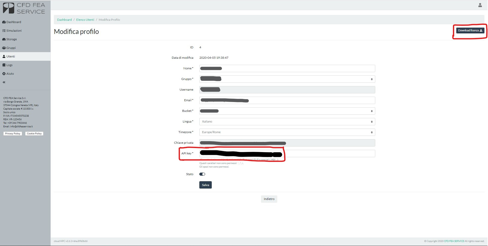

API V1 INTRODUCTION#
Current API version is “1”. This number has to be replaced to every call in the API that follows. As example the following API:
curl -X GET https://cloud.cfdfeaservice.it/api/v{version}/simulation \
-H 'api-key: {api_key}' \
-H 'Content-Type: application/json' \
-H 'Accept: application/json'
becomes:
curl -X GET https://cloud.cfdfeaservice.it/api/v1/simulation \
-H 'api-key: {api_key}' \
-H 'Content-Type: application/json' \
-H 'Accept: application/json'
Furthermore, every API requires an {api_key} that has to be provided by the user. Api_key is available in the user account page as described in the following image:

The cloud HPC system also provide a lincense file - a JSON with username and apikey - which can be used to avoid mistakes by the user when copying and pasting its apikey.
Every API has the possibility to pass the API_KEY both via the URL address or via the HEADER of a CURL call as follows:
| Mode | API call |
|---|---|
| URL | curl -X GET --header 'Accept: application/json' 'https://cloud.cfdfeaservice.it/api/v{version}/simulation?api_key={api_key} |
| Header | curl -X GET https://cloud.cfdfeaservice.it/api/v{version}/simulation -H 'Accept: application/json' -H ‘api-key: {api_key}’ |
In general it is recommendable to pass the API_KEY via the file HEADER. Please take this into consideration when using the API. Beside this guide, more details can be found at the following link.
SIMULATION LIST#
Using this API call you can get a full list of all simulations launched by the user.
curl -X GET https://cloud.cfdfeaservice.it/api/v{version}/simulation \
-H 'api-key: {api_key}' \
-H 'Content-Type: application/json' \
-H 'Accept: application/json'
The data returned in JSON format are here described:
| JSON fields | JSON value | Description |
|---|---|---|
| "id" | 1 | |
| "mdate" | "2019-04-12 20:05:08" | |
| "user_id" | 1 | |
| "bucket" | "bucket_name" | |
| "cpu" | 1 | N. of cores used |
| "ram" | "standard" | RAM used |
| "nopre" | 0 | |
| "folder" | "FOLDER_NAME" | FOLDER in the bucket |
| "mesh" | null | |
| "script" | "codeAster-13.4" | Software used |
| "clean" | 0 | |
| "idate" | "2019-04-12 20:05:08" | Start date |
| "edate" | "2019-04-12 20:05:15" | End date |
| "status" | 60 | STATUS [See legend below] |
| "pid" | 25979 | |
| "tid" | null | |
| "output" | "", | LOG |
| "images" | [] | Images [i.e. residuals, cpu, …] |
SIMULATION STATUS#
| CODE | NAME | Description |
|---|---|---|
| 10 | COMPLETED | analysis terminated correctly |
| 60 | ERROR | analysis terminated with errors |
| 20 | PENDING | analysis submitted and waiting for the system to start it |
| 30 | RUNNING | analysis in progress |
| 50 | STOPPED | analysis terminated because of a “STOP” signal |
| 40 | STOPPING | analysis terminating due to a “STOP” signal |
DATA OF A SINGLE SIMULATION#
It is obviously possible to get info about one single simulation using the ID of the simulation. Obviously return data are similar to the ones defined above.
curl -X GET 'https://cloud.cfdfeaservice.it/api/v{version}/simulation/{id} \
-H 'api-key: {api_key}' \
-H 'Accept: application/json'
The data returned follows what expressed previously.
POST NEW SIMULATION#
In order to launch a simulation you can do as follows:
curl -X POST https://cloud.cfdfeaservice.it/api/v{version}/simulation \
-H 'api-key: {api_key}' \
-H 'Content-Type: application/json' \
-H 'Accept: application/json' \
-d '{
"data": {
"cpu": "{cpu}",
"ram": "{ram}",
"folder": "{folder}",
"script": "{script}"
}
}'
The response body of every call of this API is the ID of the simulation launched.
Arguments vCPU, RAM, SCRIPTs#
In order to retrieve the values of vCPU/RAM/SCRIPTs available to execute a simulation, it is possible to use the following API:
curl -X GET https://cloud.cfdfeaservice.it/api/v{version}/simulation/cpu \
-H "api-key: {api_key}" \
--header 'Accept: application/json'
curl -X GET https://cloud.cfdfeaservice.it/api/v{version}/simulation/ram \
-H "api-key: {api_key}" \
--header 'Accept: application/json'
curl -X GET https://cloud.cfdfeaservice.it/api/v{version}/simulation/scripts \
-H "api-key: {api_key}" \
--header 'Accept: application/json'
The latest argument is the FOLDER where we want to execute the simulation. This argument can be obtained from the NAVIGATION IN THE STORAGE, once we have uploaded at least one folder.
REG and SPOT instances#
For the users which have enabled the REG/SPOT selection it is possible to determin which instance type they are using by adding the appropriate property nopre in the "data" section of the json input.
The possible selections are:
- "nopre": 0 -> uses SPOT instance type
- "nopre": 1 -> uses REGULAR instance type
In order to execute a simulation on SPOT instance just type the following command:
curl -X POST https://cloud.cfdfeaservice.it/api/v{version}/simulation \
-H 'api-key: {api_key}' \
-H 'Content-Type: application/json' \
-H 'Accept: application/json' \
-d '{
"data": {
"cpu": "{cpu}",
"ram": "{ram}",
"folder": "{folder}",
"script": "{script}",
"nopre": 0
}
}'
RUNTIME CONTROL#
At any time it is possible to execute some runtime commands which gives control of the process. The runtime options are:
- HARD STOP: kills the simulation without saving anyting on the storage. In order to call it:
curl -X PUT https://cloud.cfdfeaservice.it/api/v{version}/simulation/{id}/stop \
-H 'Accept: application/json' \
-H 'api-key: {api_key}' \
-d '{
"data": {
"signal": "SIGINT"
}
}'
- SOFT STOP: stops simulation at current iteration and save results. In order to call it:
curl -X PUT https://cloud.cfdfeaservice.it/api/v{version}/simulation/{id}/stop \
-H 'Accept: application/json' \
-H 'api-key: {api_key}' \
-d '{
"data": {
"signal": "SIGTSTP"
}
}'
Note that SOFT STOP can take several minutes before everything is completed as it involves, among other tasks, stopping the executable, saving the current iterations and uploading everything into the storage.
- SYNC: saves current results on the storage and proceeds the simulation. In order to call it:
curl -X PUT https://cloud.cfdfeaservice.it/api/v{version}/simulation/{id}/sync \
-H 'Accept: application/json' \
-H 'api-key: {api_key}' \
-d '{
"data": {
"signal": "SIGQUIT"
}
}'
UPLOAD OF FILE#
In order to upload and download any file from the cloud storage the process consists of two phases: the first one is a request of a URL where we can upload/download a file, while the second phase regards the process of download/uploading the file itself. In order to make an URL request to upload the file:
curl -X POST https://cloud.cfdfeaservice.it/api/v{version}/storage/upload/url \
-H 'api-key: {api_key}' \
-H 'Content-Type: application/json' \
-H 'Accept: application/json' \
-d '{
"data": {
"dirname": "{dirname}",
"basename": "{filename}",
"contentType": "application/octet-stream"
}
}'
In the call dirname is the directory where we want to store the file, while basename represents the file name once uploaded on the server. The reply of the previous API is an URL we have to use in the following call in order to upload the file:
curl -X PUT -H 'Content-Type: application/octet-stream' \
-T {path_to_filename} {upload_url}
DIRECT UPLOAD OF SINGLE FILE#
In case we have to upload a single file, it is possible to speed up the process using the following single call:
curl -X POST https://cloud.cfdfeaservice.it/api/v{version}/storage \
-H "api-key: {api_key}" \
-H 'Content-Type: multipart/form-data' \
-H 'Accept: application/json' \
-F dirname={dirname} \
-F basename=@{path_to_filename}
This function replies with a JSON file which summarizes the information of the file which has just been uploaded.
N.B.: this upload works only for file of size lower than 2 Mb
NAVIGATION#
In order to navigate through the storage you need to use the following method:
curl -X GET https://cloud.cfdfeaservice.it/api/v{version}/storage/{id}/list \
-H 'api-key:{api_key}' \
--header 'Accept: application/json'
{id} is the id of each single directory and its subfolders. If {id} = 0 you will be returned the content of the root folder. Alternatively, it is possible to interrogate a single file/folder using its own name and location as follows.
curl -X POST https://cloud.cfdfeaservice.it/api/v{version}/storage/view \
-H 'api-key: {api_key}' \
-H 'Content-Type: application/json' \
-H 'Accept: application/json' \
-d '{ "data": { "path": "{path}" } }'
Using this last method, it is possible to use the folder name, exactly as returned by the simulation info API call to get idea of the files contained in the case folder.
ALL FILES AND FOLDERS INFO#
In order to retrieve the info of ALL the files available in the storage, it’s possible to use the following command:
curl -X GET https://cloud.cfdfeaservice.it/api/v{version}/storage \
-H 'api-key:{api_key}' \
--header 'Accept: application/json'
The resulting JSON file might be big, so use it carefully!
SINGLE FILE INFO#
It is also possible to get all the information of a single file with the following:
curl -X GET https://cloud.cfdfeaservice.it/api/v{version}/storage/{id} \
-H 'api-key:{api_key}' \
--header 'Accept: application/json'
where, as before, {id} is the file ID.
DOWNLOAD#
Exactly like uploading files, in order to download one file we have to make a double call: the first one gives a URL from which we can download the file. In order to identify the file we want to download, we can use the ID of the file:
curl -X GET https://cloud.cfdfeaservice.it/api/v{version}/storage/{id}/download/url \
-H 'api-key: {api_key}' \
-H 'Content-Type: application/json' \
-H 'Accept: application/json'
This call returns an URL we can use to download the file with the following:
curl -X GET {download_url} -L -o {path_to_filename}
DIRECT DOWNLOAD OF FILE#
In order to speed up the process, it’s also possible to download file using a unique API call - a method which is basically the sum of the two mentioned earlier, as follows:
curl -X GET https://cloud.cfdfeaservice.it/api/v{version}/storage/{id}/download/file \
-H 'api-key: {api_key}' \
-H 'Content-Type: application/json' \
-H 'Accept: application/json'
Once again, {id} is the ID of the file.
DELETE FILE OR FOLDER#
To delete a single file [or folder] present in the storage we have to retrieve its ID using the abovementioned functionalities and then use the following API:
curl -X DELETE https://cloud.cfdfeaservice.it/api/v{version}/storage/{id} \
-H 'api-key: {api_key}' \
-H 'Accept: application/json'
Obviously we have to detect the file [or folder] {id} using the storage navigation methods.